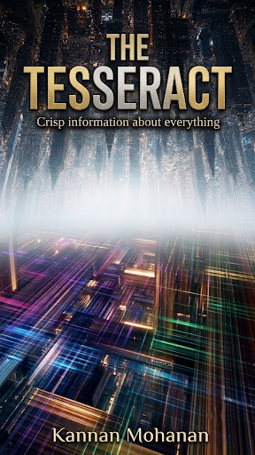
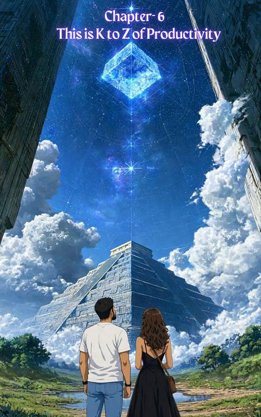

Now open for pre-order
The Tesseract
Crisp Information about Everything
by Kannan Mohanan
Eleven chapters, one idea each — a practical way to clear the fog, cut through decision fatigue, and see your next move clearly.
Pre-order on Amazon
About the Book
This book is an 11-chapter magic pill box — one idea each, built for the aspirant who wants clarity. No gimmicks. No overnight millionaire mantras. No early morning robotic rituals. Just a mystery bag of sharp, pragmatic solutions.
You're not lazy. You're not lost. You're just carrying too many open tabs in your head, and no one taught you how to close them. Every decision, every “should I or shouldn't I,” sits open in the background, quietly draining you before the day even starts.
This book is like a wiper for a windshield. It's going to clear the fog and help its aspirants get a clear view on their journey. This book won't decide the path. It will give light so the aspirant can walk their own, with confidence and clarity.
A system with clarity on both the problem and the desired outcome has 80% solved its purpose.
You'll say things like…
- “Oh my god, how did I miss this simple thing?”
- “This one small change will make a big impact — let me do this.”
- “How did I miss this approach for this problem?”
- “Yes, fatigue isn't the problem — the way I'm dealing with it is.”
- “Wow, this is spot on — let me fix this myself.”
- “Gotcha, this is the missing piece of my life. Thank you.”
An interrogative, interesting reading journey. Author and reader searching together, not a guide handing down pre-solved answers — the journey of Kannan Mohanan and his findings, alongside his editor, Zendya Copeland.
Inside the Book
Eleven chapters. One idea each.
- Chapter I
Why Tesseract
- Chapter II
Hey Murph
- Chapter III
The Drama King
- Chapter IV
Fix the Feed
- Chapter V
The Magic Machine

Chapter VIThis is K to Z about Productivity
- Chapter VII
The Art of Prioritisation
- Chapter VIII
Rameshwaram vs Amudham
- Chapter IX
Social Currency
- Chapter X
Done and Dusted
- Chapter XI
One Step Extra
A Few Lines from the Book
Don't try to optimize what you should eliminate. Before asking ‘How can I do this faster?’, ask ‘Does this need to be done at all?’
Daydreaming for applause is a trap; rehearsing for the real task is a tool.
The list is there to free you, not to rule you.
Clear the fog. See your next move.
The Tesseract is open for pre-order on Amazon.
Pre-order on Amazon